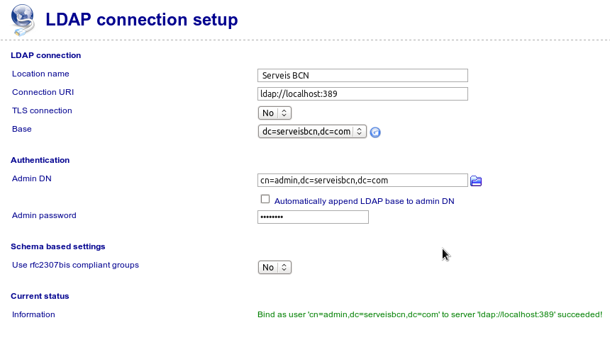

Per funcionar, GOsa2 necessita la inclusió de diversos esquemes al directori. L’aplicació és molt potent, però a l’activitat descriurem únicament la instal·lació bàsica per permetre’n el funcionament, tot i que des de l’aplicació es poden integrar i controlar molts altres serveis.
Es dóna per fet que hi ha un servidor LDAP funcionant a l’ordinador on es vol instal·lar l’aplicació i que aquest sistema està correctament configurat pel que fa a nom de màquina, domini i xarxa.
El primer pas és instal·lar el programari pròpiament dit i els esquemes necessaris per al seu funcionament correcte:
root@servidor:~# aptitude install gosa gosa-schema
A partir d’aquest moment es pot continuar la instal·lació i configuració del programari de forma gràfica des d’http://servidor/gosa, on servidor ha de ser el nom de la màquina on s’ha instal·lat el programari. En accedir-hi, un assistent en format web guia el procés. És molt important llegir totes les instruccions, si no la instal·lació no es farà correctament. L’assistent realitza una configuració bàsica i intenta resoldre els problemes que puguin sorgir amb l’LDAP o PHP.
Com a mesura de seguretat i primer pas en la instal·lació, es demana crear un fitxer per permetre la instal·lació. Aquest fitxer es comprova abans de continuar. Una vegada creat des del terminal o des d’una sessió SSH es pot seguir.
root@servidor:~# echo -n kb6s76o82u3obs33q5kqajini1 > /tmp/gosa.auth
El segon pas és, simplement, la selecció de l’idioma. La detecció automàtica no és mala opció, ja que així serà la configuració del navegador la que definirà l’idioma de la interfície.
La tercera pantalla realitza la comprovació dels requisits mínims quant a llibreries PHP. Si alguna cosa no és correcta caldrà solucionar-ho, però és difícil degut al sistema de paquets de Debian i la seva gestió de dependències.
La quarta pantalla mostra la llicència, que cal acceptar.
La cinquena pantalla demana l’usuari amb el qual es realitzarà la connexió al directori. Aquest usuari ha de ser l’administrador del sistema. Si les dades són correctes, la línia d’informació és de color verd i confirma que l’usuari s’ha connectat correctament:

Configuració de la connexió GOsa2 al servidor LDAP
De vegades, tot i haver escrit correctament el nom d’usuari i la contrasenya sembla que no detecta bé la connexió. En aquest cas cal tornar a carregar la pàgina.
La sisena pantalla és la que porta als problemes. El primer error en la instal·lació és degut al fet que els esquemes necessaris pel correcte funcionament de GOsa2 no estan instal·lats en el servidor OpenLDAP, encara que s’hagi instal·lat el paquet que els conté (gosa-schema). El problema és que aquests esquemes no han estat afegits al sistema.
De fet, si es mira el contingut del paquet s’observa que no hi ha fitxers LDIF, només fitxers .schema, que caldrà transformar per poder-los afegir al directori:
root@servidor:~# dpkg -L gosa-schema
/.
...
/etc/ldap/schema/gosa/gosystem.schema
/etc/ldap/schema/gosa/rfc2307bis.schema
/etc/ldap/schema/gosa/gosa-samba3.schema
/etc/ldap/schema/gosa/gofon.schema
/etc/ldap/schema/gosa/goto.schema
/etc/ldap/schema/gosa/trust.schema
/etc/ldap/schema/gosa/goto-mime.schema
/etc/ldap/schema/gosa/gofax.schema
/etc/ldap/schema/gosa/goserver.schema
/etc/ldap/schema/gosa/samba3.schema
GOsa2 proporciona un script per poder convertir els fitxers schema en fitxers LDIF de forma no traumàtica:
https://oss.gonicus.de/labs/gosa-contrib/browser/squeeze-install-scripts/trunk/schema2bcldif.sh
Amb aquest guió és molt fàcil realitzar la conversió dels fitxers. Se’n mostra un com a exemple, però s’ha de fer amb tots:
root@servidor:/etc/ldap/schema/gosa# ./schema2bcldif.sh gofax.schema > gofax.ldif
Posteriorment cal afegir els fitxers .ldif al directori amb la ja coneguda ordre ldapadd. Se’n mostra només un, però cal afegir tots els fitxers creats:
root@servidor:/etc/ldap/schema/gosa# ldapadd -Y EXTERNAL -H ldapi:/// -f samba3.ldif
És important afegir tots els fitxers, però com que hi ha dependències entre ells, cal mirar que no hagi hagut cap error en afegir algun dels esquemes. Amb el directori preparat, ja es pot continuar la instal·lació de GOsa2 mitjançant l’entorn web.
Les pantalles 7 8 i 9 configuren diversos aspectes de GOsa2 que permeten personalitzar-ne el funcionament, però que van més enllà del que es pretén mostrar en aquesta activitat.
La pantalla 10 permet realitzar les modificacions necessàries en el directori LDAP perquè GOsa2 pugui funcionar correctament. Cal fer clic en el botó Migrate per fer aquestes modificacions.
La pantalla 11 permet informar els desenvolupadors que una nova instància del programa està essent utilitzada, però no és necessari.
Per últim, el fitxer de configuració ha estat creat però no és operatiu. Cal seguir les últimes instruccions, que són crear el fitxer de configuració, descarregant-lo i copiant-lo al lloc corresponent, i canviar el propietari i permisos d’aquest fitxer:
root@servidor:/etc/gosa# vim gosa.conf
root@servidor:/etc/gosa# chown root:www-data /etc/gosa/gosa.conf
root@servidor:/etc/gosa# chmod 640 /etc/gosa/gosa.conf
A partir d’aquest moment l’aplicació està preparada per funcionar.